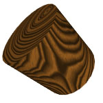
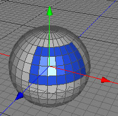

Material Tag
The Material Tag will be created automatically when you drag and drop a material onto a polygon object in the object browser. You cannot assign materials to other objects that aren't polygon objects. The icon of the Material Tag will show a small preview of the used material. When you delete a material in the material browser all Material Tags which reference the material will be deleted too.
Within the Material Tag the shading space will be determined and a final transformation to the UV coordinates is possible before being sent to the renderer. This last transformation of the UV coordinates is especially useful for parametric polygon objects when natural UV coordinates are used.
Multiple material per mesh
It is possible to allocate up to 16 different
materials per mesh. Use the independent polygon selections of
the raw
polygon object to constrain a material to a selection of
polygons from the entire mesh. See Example 3 for a step by step
explanation.
Attention: If you assign more than one material to one single polygon then the right most Material Tag in the object browser will be used for shading that polygon. For example, if you have five Material Tags assigned to one mesh, and in the last Material Tag shading selection is set to all then all polygons will use the material of the last Material Tag.
Properties
- Material: Links to the material which is used for shading.
- Shading selection: Constrain the material to a polygon selection. Use the index of the polygon selection you used in the Polygonobject.
- Shading space: Determines if the object will be shaded in world space or object space. See Example 1 for a visual example of the difference between these two shading spaces.
- Tangent space: Determines how the shading tangents are computed. The shading tangents are mainly needed for bump mapping.
- Offset: Translate the shading space by offset.
- Rotation: Rotate the shading space by rotation.
- Scale: Scale the shading space by scale.
- UV offset: Gives the uv coordinate a final offset before being sent to the renderer.
- UV rotation: Gives the uv coordinate a final rotation before being sent to the renderer.
- UV scale: Gives the uv coordinate a final scale before being sent to the renderer.
Example 1
In this example you can see a rotated trunk with a
wood material added. If you shade in world space the wood
material will be calculated as if the tree trunk is standing
perpendicular to the earth. This behavior is often not what was
wanted. If we shade the trunk in object space the spading space
will be rotated with the trunk and we get the expected behavior.
The shading space could also be modified manually with the offset, rotation and scale properties.

world space object space
Example 2
This example will explain step by step how to assign a
material to a polygon selection.
- Create a ball object and make it editable.
- Set the Polygonobject property polygon selection to 1.
- Select some polygons.
- Set back the Polygonobject property polygon selection to 0. We do this so that our selection is saved in polygon selection 1.
- Assign a blue material to the Polygonobject. The whole ball will be blue.
- Click on the Material tag in the object browser. The properties of the material tag will appear.
- Set the Material tag property shade selection to 1. Now the material will be constrained to polygon selection 1 of our Polygonobject.
